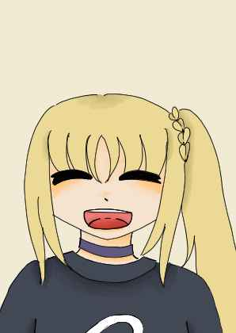
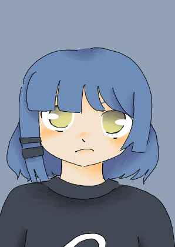

Nijika Ijichi
Batteuse et fondatrice du groupe.
Ryō Yamada
Bassiste du groupe.
Ikuyo Kita
Chanteuse et guitariste secondaire du groupe.
Hitori Gotō

Le groupe Kesoku Band (Ou les attaches en français) est composé de quatres jeunes lycéenes. Ce n'est encore qu'un petit groupe qui joue dans la salle de la grande soeur d'une des membres mais elles ont surement un grand avenir devant elles. On peut catégoriser ce groupe comme du rock alternatif ou du rock indépendant avec des touches de punk rock tout en gardant ce coté mignon qui est la marque de fabrique des groupes de musique féminin au japon.